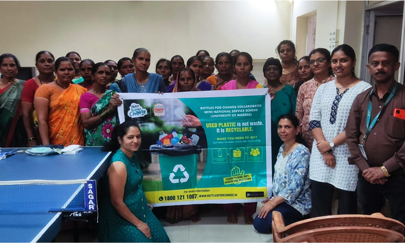
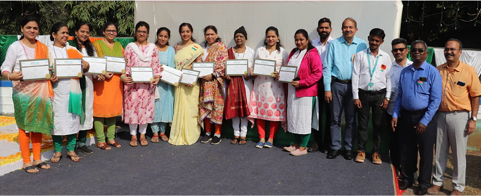

Bisleri Bottles for Change aims to promote the responsible disposal
and recycling of plastic waste. We believe that by educating and
engaging communities, we can transform plastic waste into sustainable
opportunities, fostering a culture of environmental responsibility and
stewardship.

Why Bisleri Bottles for Change ?
-
Environmental Impact :
Plastic waste is a significant environmental challenge. By recycling Bisleri bottles, we reduce the amount of plastic ending up in landfills and oceans. This initiative helps conserve natural resources, reduce pollution, and protect wildlife.
-
Community Engagement :
We work closely with schools, colleges, residential societies, and businesses to spread awareness about plastic recycling. Through workshops, events, and campaigns, we educate individuals on the importance of recycling and how they can contribute to a cleaner environment.
-
Economic Benefits :
Recycling plastic bottles not only helps the environment but also generates economic opportunities. By creating a systematic recycling chain, we support livelihoods for waste collectors and recyclers, contributing to the local economy.
successfully for the past 4 years we have responsibly recycled 100+
MT of plastic waste.
